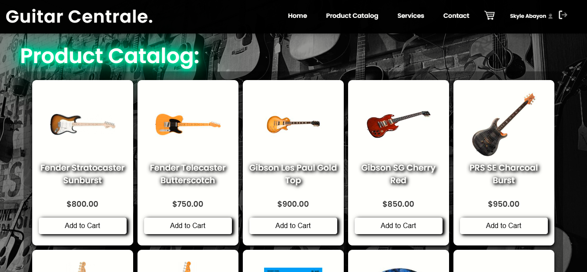
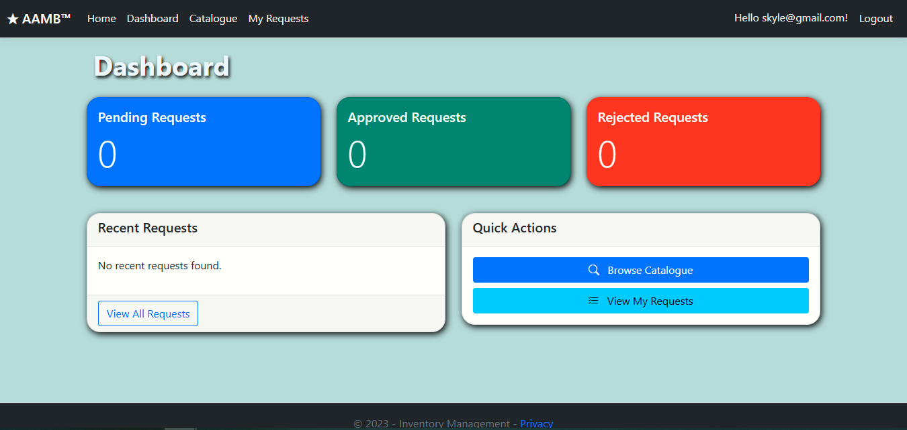
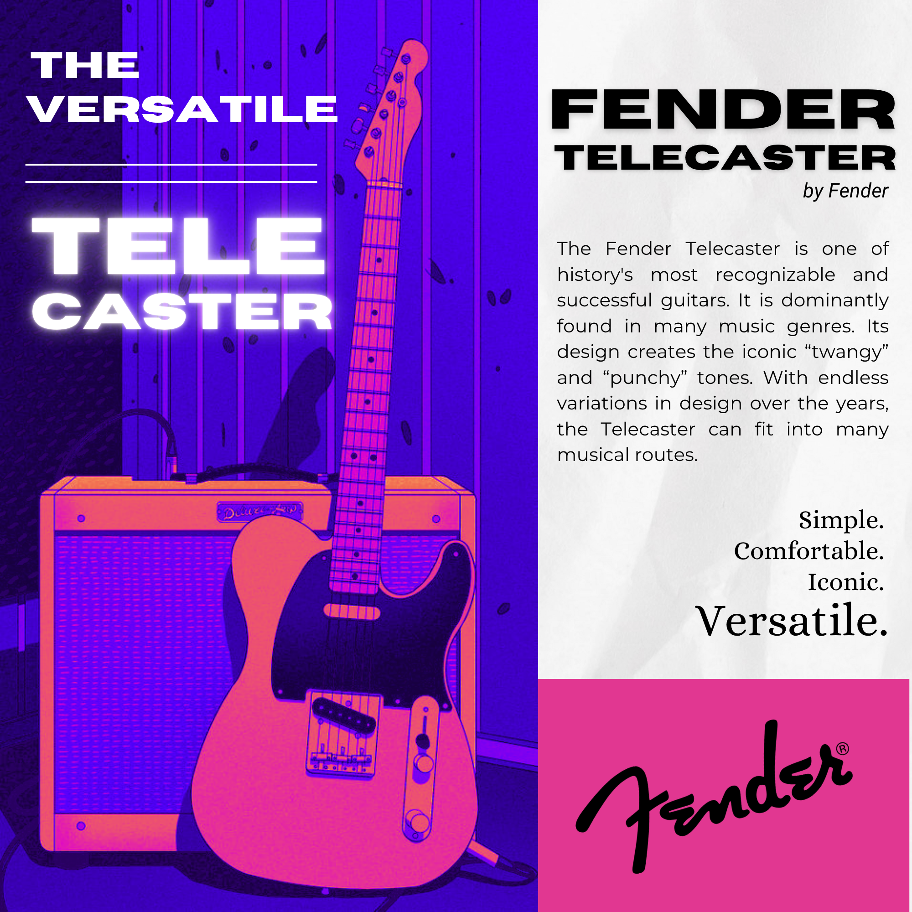
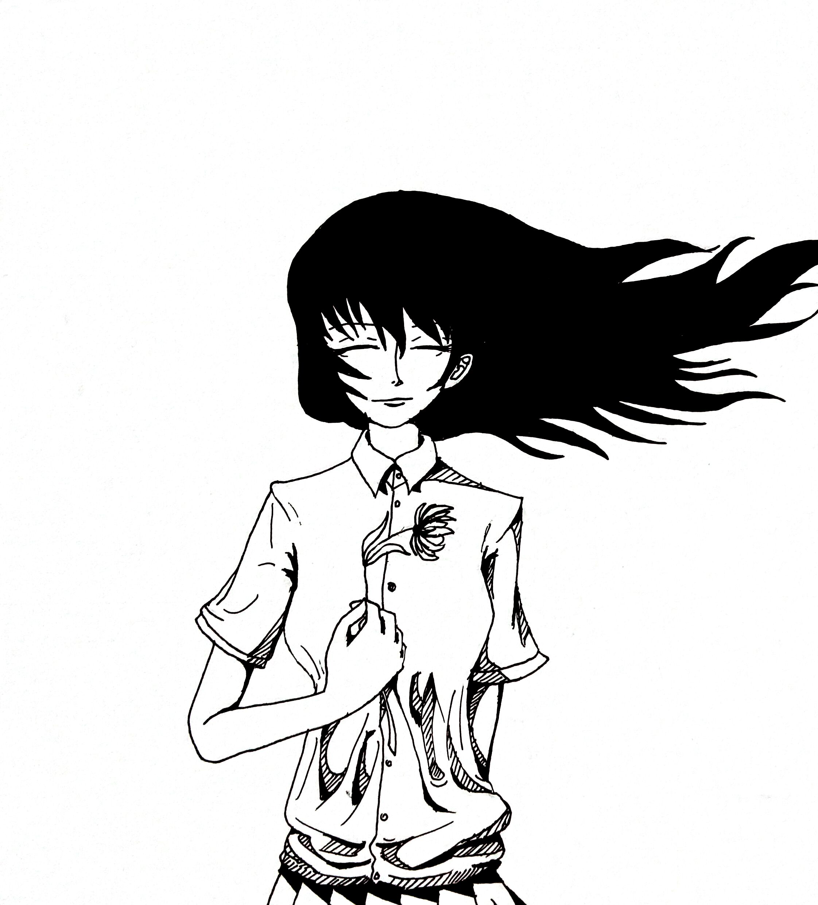

Work
E-Commerce Webpage | Guitar Centrale

An E-commerce website for Musical Instruments and Accessories. Made with the help of XAMPP. Core languages used: HTML, CSS, JS, and PHP. Uses MySQL Database.
Functionalities include: User authorization, User Roles (Admins and General Users), Manageable Item Catalogue (Add, Edit, and Delete), etc.
This project not only allowed me to gain hands-on experience with SQL operations, but also provided an opportunity to explore the full development lifecycle, from design to demonstration.
AABM | Inventory Management System

An Inventory Management System for theoretical implementation for multi-industrial purposes. Made using ASP.NET MVC Core. Honestly, I'd say that this was 98% developed by AI tools because this was a rushed school project together with its manuscripts too. I guess I got away with it..
The Telecaster Pubmat

Made with Canva. Highlights the versatility and beauty of the Fender Telecaster electric guitar. This pubmat was made just for fun and I felt the need to glaze on the Tele for a full hour.
Band Album Cover
.png)
I was trying to create a retro-like aesthetic with this. Made with Canva. This was a mock album cover for the band I was a part of. Background image was taken from a beach in San Remigio, Cebu by me. I like it.
Gig Calendar
.png)
Made with Canva. Contains gig schedules. Color-coded and displays gig details. This design was quite experimental—I was not comfortable with the palette, but it looks dope!
Ghostly Woman

Drawn traditionally, Converted and Cleaned digitally. I drew this right after having dreamt of this spectacle on one random night a couple of years back.
Gallery Item 7
Description
Gallery Item 8
Description
Gallery Item 9
Description